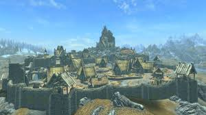
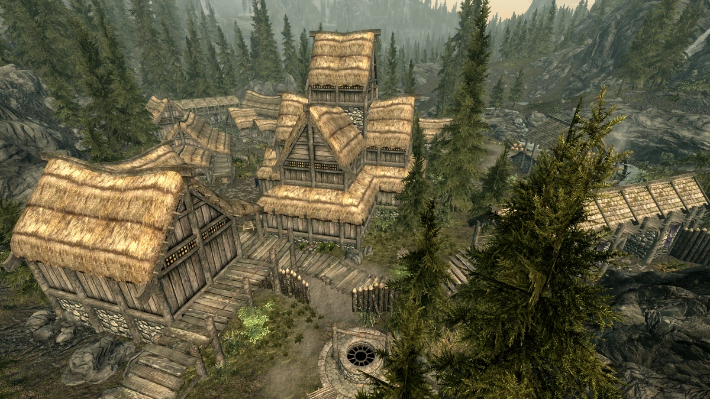
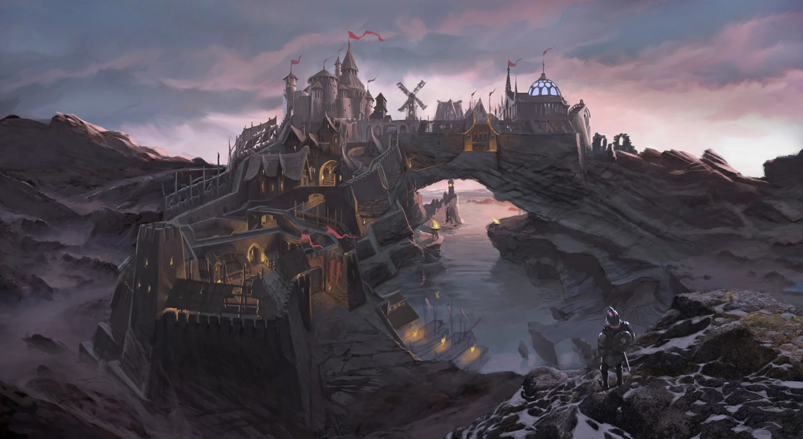
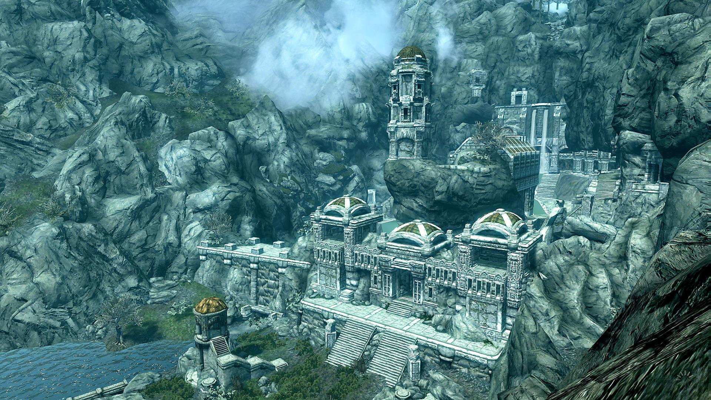
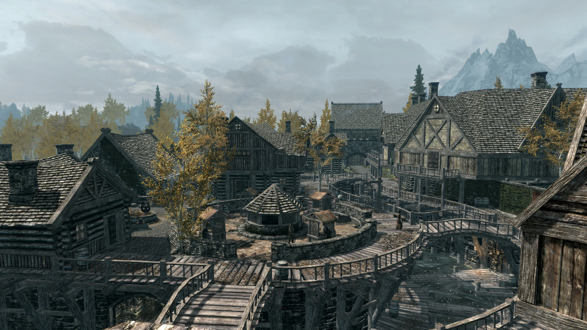
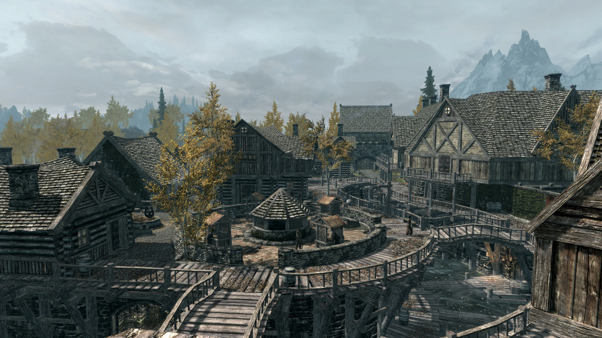
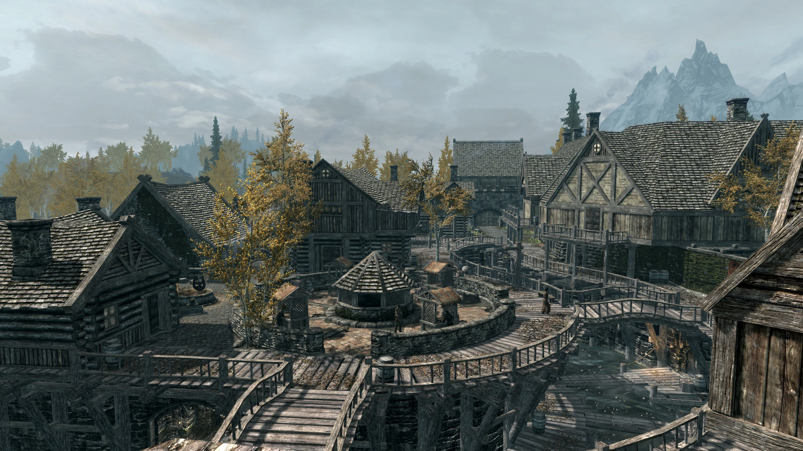
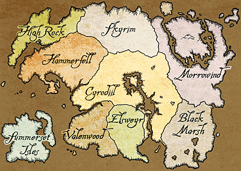
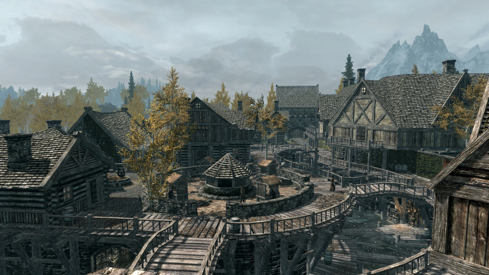

Gallery




 


Skyrim is a land of stunning landscapes, rich history, and diverse cultures. From the snowy peaks of the Throat of the World to the lush forests of Falkreath, every traveler can find something magical.
A bustling city known for its market and the iconic Dragonsreach.
A serene region with beautiful forests and the Graveyard of the Lost.
The capital of Skyrim, famous for its architecture and the Blue Palace.
